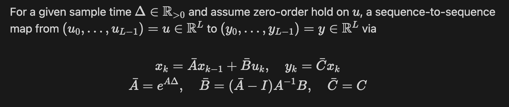

Diagonal State Space Model
By leveraging the HiPPO theory, S4 serves as a successful enhancement of linear state space layer (LSSL) that possesses the capability to model long sequential data accurately and efficiently. However, nothing is flawless. In order to fully employ the HiPPO theory, S4 implements complex parameterization (DPLR) and computation algorithms that require high-level knowledge in advance linear algebra, which consequently raise the difficulty of understanding algorithm details and conducting further analysis. With the motivation of simplifying S4, Diagonal State Space (DSS) is introduced. In this article, we will go through the details about the derivation of DSS, learning how DSS achieve complexity reduction without performance sacrifice
Motivation
S4 acquires its strong performance in long sequence modeling with a trade-off of model complexity. In order to fully leverage the HiPPO theory, S4 parameterizes the learned state spaces using a Diagonal Plus Low Rank (DPLR) structure and employs several reduction steps and linear algebraic techniques to achieve efficient computation, resulting in a procedure that is difficult to understand, implement, and analyze. Surprisingly, Ankit [1] discovered that S4 still holds its performance when the low-rank component of the state matrix was removed, and further embark the investigation in a simplified version of S4 - Diagonal State Space (DSS).
Diagonal State Space
Zero-Order Hold Discretization
Before we dive into the core of DSS, let’s first talk about the discretization technique DSS used - Zero-Order Hold (ZOH) discretization.
where the ZOH assumption assumes the value of a sample of is held constant for a duration of one sample interval. Comparing to the general bilinear transformation (GBT) discretization employed in S4, ZOH is very simple and easy to implement. Nonetheless, the simplicity of ZOH may suffer from aliasing and distortion when facing high-frequency dynamics.
Core Proposition
DSS is built around a core proposition defined in [1], which is stated as follows:
Let’s translate and summarize this proposition with plain English: For any given state space with a well-behaved state matrix, there exists a DSS, parameterized by a complex vector w and a diagonal matrix Λ, computing the same kernel. In other words, this proposition states that DSS possesses adequate expressivity to represent any well-behaving state space, despite of its simplicity.
Unfortunately, there is an underlying risk of numerical instability if we directly used DSS kernels acquired via this equation. There is a chance for the element-wise exponential matrix P to contain large positive values, which will make real parts of elements Λ positive and consequently result in unstable training on long inputs. To address this issue, two variations of DSS are proposed, DSS-EXP and DSS-SOFTMAX.
Variation I - DSS-EXP
This variation augments the proposition by posing an additional restriction to Λ. By restricting the real part of elements of Λ to be negative, the possibility of encountering very large values during kernel computation is directly eliminated. However, this straightforward approach comes with an obvious disadvantage of limiting the learning space of Λ, which consequently reduces model expressivity. Moreover, it is unclear whether the restriction of negative real parts could be detrimental for some tasks. As a result, DSS-EXP provides a simple approach to achieve stable model training while its performance trade-off may restrain its application in specific fields.
Variation II - DSS-SOFTMAX
DSS-SOFTMAX handles numerical instability with the concept of softmax normalization. Since ordinary softmax function can have singularities over the complex field and technically does not fully resolve the issue of large positive real parts, an augmented version of softmax function is introduced in [2]. To avoid computing large positive real parts while training, the augmented softmax finds and subtracts the largest real part among row elements. To make the augmented softmax well-defined on the entire complex field, row sums are computed as the square of the modulus to prevent complex division. As a result, DSS-SOFTMAX successfully handles both numerical instability and function singularities without sacrificing the learning space of Λ.
Expressivity & Performance
After learning about the simplification algorithm, let’s move on to how DSS actually performs both theoretically and practically. From the theoretical perspective, we will show that DSS is able to dynamically handle memories depending on the input information. From the practical perspective, we will compare DSS’s performance on sequence modeling tasks with S4 and other effective models.
Theoretical Expressivity - DSS-EXP
With computed Λ and ZOH timestep , we can obtain the discretization with respect to the kernel obtained via equation (1)
When computing the SSM recurrence, the computations of N coordinates are independent since the state matrix is diagonal, so the i-th coordinate can be easily obtained as
Note that the real parts of lambdas are negative with respect to the restriction of DSS-EXP, we can derive the following two analyses:
By depicting DSS-EXP’s behaviors at two extreme conditions, we can tell that DSS-EXP has expected expressivity to present different scales of history memorization depending on the input context ranging from complete memorization to full forgetting, making it a good candidate for handling long range dependency (LRD).
Theoretical Expressivity - DSS-SOFTMAX
With computed Λ and ZOH timestep Delta, we can obtain the discretization with respect to the kernel obtained via equation (2)
With the same independence implied with diagonal state matrix, we can compute the SSM recurrence for each coordinate as
In order to prevent computing the large sequence length L directly, we compute with a intermediate state
In the equation above, we drop the coordinate index i for simplicity and let p be the identity function indicating whether the real part is greater than zero. Straightforwardly, we will conduct our analysis based on the outcome of p.
We obtain the same conclusion as the previous derivation for DSS-EXP, indicating the DSS-SOFTMAX also possess the desired expressivity to accurately handle LRD.
Empirical Evaluation
Last but not least, let’s look at the empirical evaluation of DSS presented in [1].
We can see that DSS obtains comparable performance as S4 in LRD tasks and, same as S4, outperforms Transformer variants by 20% or more in overall accuracy. In conclusion, DSS is proved to have outstanding ability in long sequence modeling from both theoretical and practical point of view, enabling it to be a potential resolution candidate in future LRD tasks
Conclusion
In this article, we go through the core components of the study about DSS, and conclude with its spectacular performance. As an extension of S4 that exploits the HiPPO theory, another research ([2]) were done to investigate the optimal parameterization and initialization for DSS and developed further variants. The studies on DSS, S4, and Mamba open up a new direction of approaching sequence modeling tasks, and further researches must be done to convert them into a foundation model like Transformer.
Citation
- Ankit Gupta, Albert Gu, Jonathan Berant, “Diagonal State Spaces are as Effective as Structured State Spaces” arXiv:2203.14343v3 [cs.LG] 18 May 2022
- Albert Gu, Ankit Gupta, Karan Goel, and Christopher Ré, “On the Parameterization and Initialization of Diagonal State Space Models” arXiv:2206.11893v2 [cs.LG]